Founder of ATR Technologies
David
Adebayo.

About Me
Founder, Product Builder & Engineer.
I build practical technology systems that keep homes, businesses, and institutions connected, powered, and operational. My work blends field execution, engineering depth, and founder-level decision making.
About Me
Engineering Africa's
Smart Infrastructure,
from the ground up.
I am a tech entrepreneur with over 6 years of experience in engineering systems design, system automation, and product development. My work is focused on solving real infrastructure challenges across Nigeria — delivering IoT systems for smart homes and industries, internet connectivity solutions, and renewable energy integration that actually works in the field.
My mission is to reduce Nigeria's decade-long dependence on imported smart technology by engineering locally relevant, affordable alternatives — built to last.
Embedded Systems
IoT Design
CAD Prototyping
AI-Powered Dev
Software Engineering
Renewable Energy
Arduino / C++
Systems Automation
- IoT systems design for smart homes & industry
- Embedded systems programming & prototyping
- Renewable energy & solar integration
- Network connectivity & infrastructure
- Arduino C++, Python, HTML/CSS
- CAD tools for hardware prototyping
- AI-assisted development workflows
- Agile, Asana, MySQL
- Field-led, founder-level execution
- Long-term system support & maintenance
- Stakeholder & client communication
- Structured delivery with real accountability
Projects
Proven delivery across IoT, Engineering Design, Software, and Project Management.
Explore my core project categories. Each section represents a pillar of my expertise in solving real infrastructure challenges and driving technological independence.
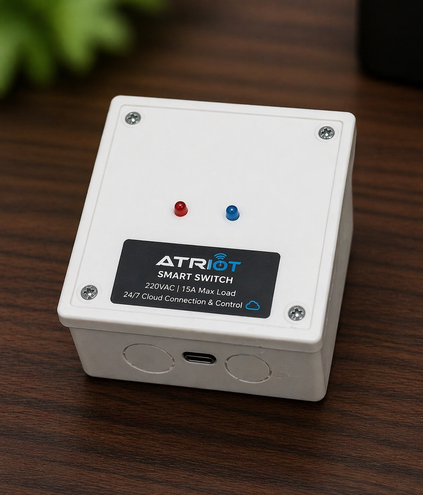
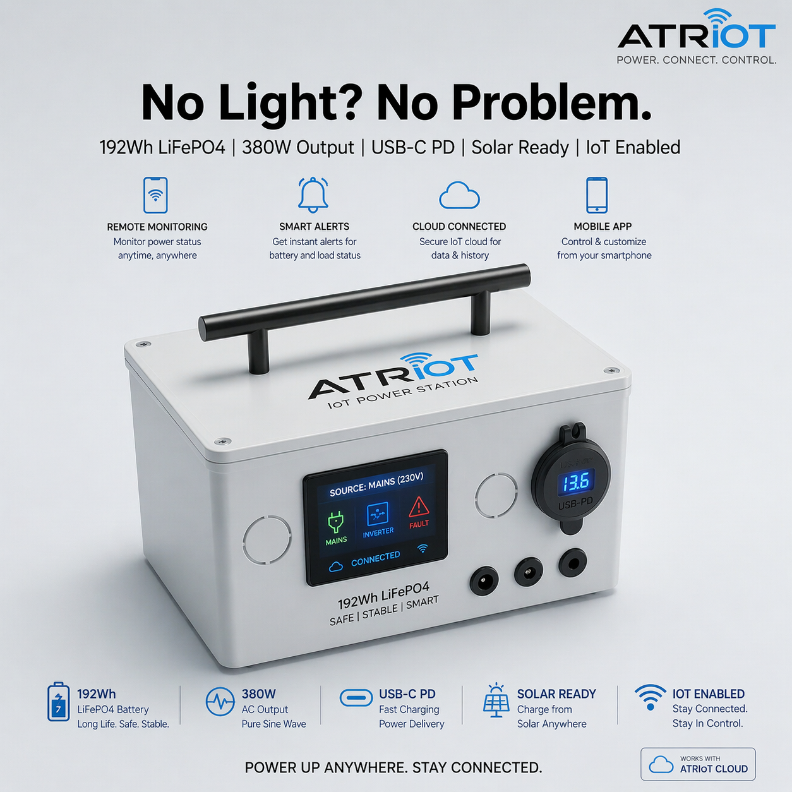
Swipe →
Category 01
IoT SolutionsSmart automation for homes and industries
Designing and deploying intelligent systems that integrate internet connectivity and renewable energy for seamless, automated environments.
Focus
Smart home integration, industrial IoT, and remote monitoring.
Approach
Leveraging embedded systems to create responsive, energy-efficient spaces.
Role
IoT Architect & Systems Integrator
Goal
Affordable, localized smart technology.
- Embedded Systems
- Smart Homes
- Industrial IoT
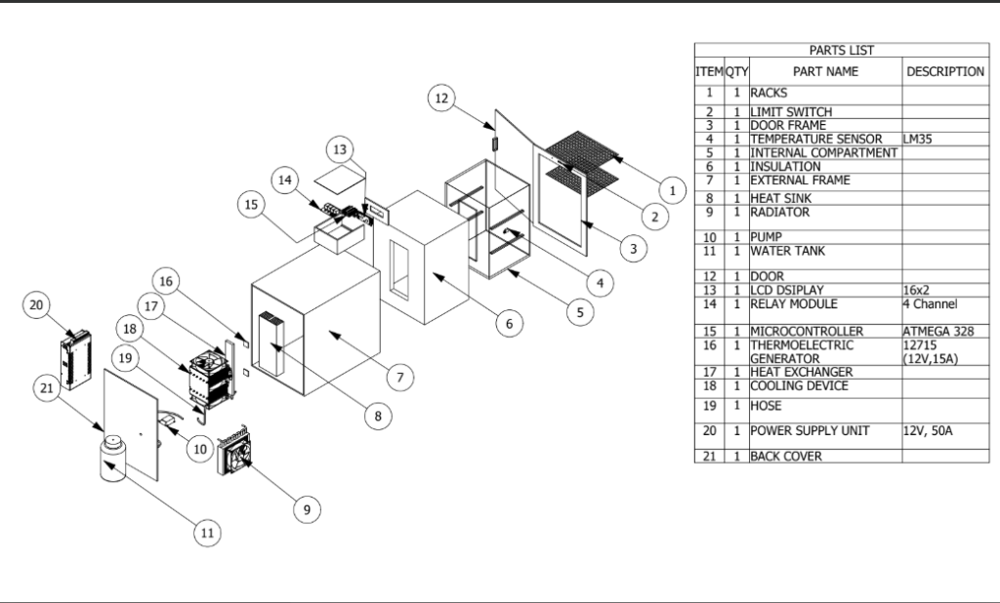
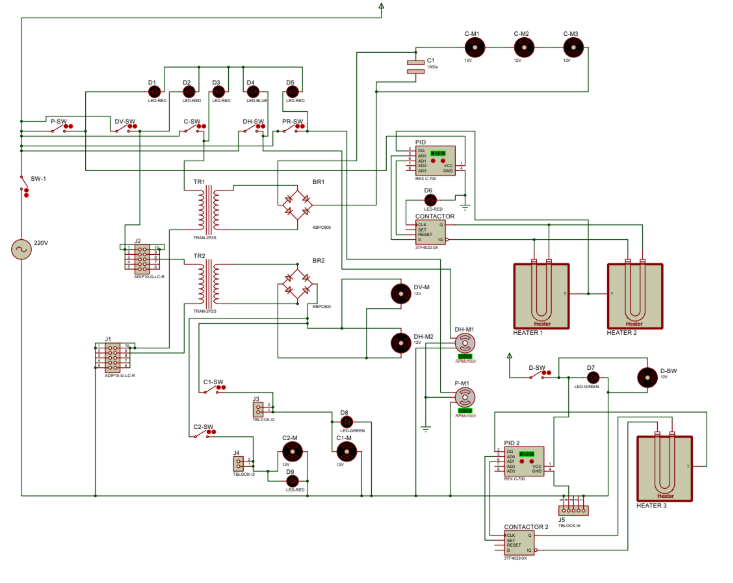
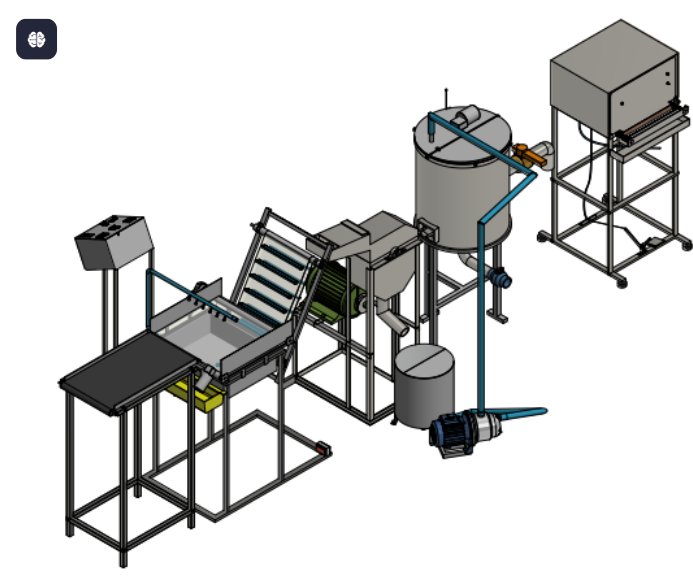
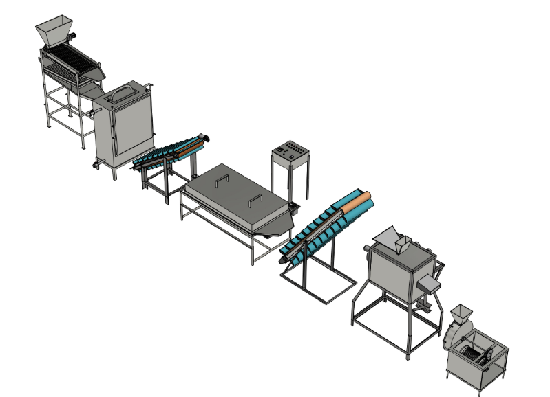
Swipe →
Category 02
Engineering Systems DesignRobust hardware design and prototyping
From concept to CAD, building the physical infrastructure and hardware systems necessary to support reliable technology deployments.
Focus
Hardware prototyping, CAD modeling, and system architecture.
Approach
Iterative design focusing on durability and local manufacturing potential.
Role
Lead Hardware Engineer
Goal
Reduce import dependence.
- CAD Prototyping
- Hardware Design
- Infrastructure
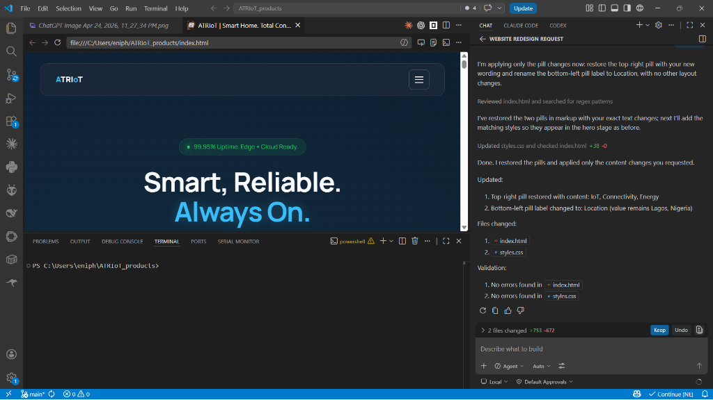
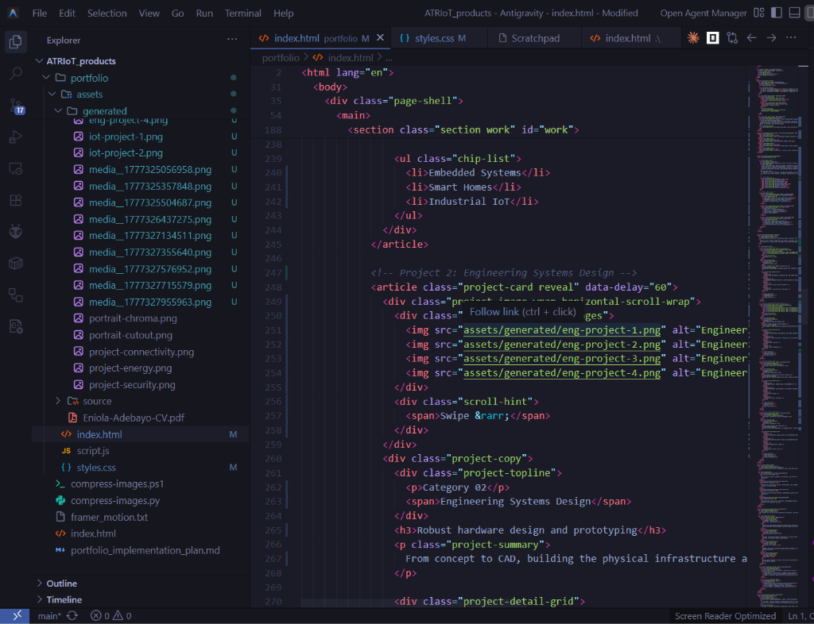
Swipe →
Category 03
Software DevelopmentIntelligent platforms and AI-driven workflows
Developing the software backbone that powers hardware systems, utilizing modern stacks and AI-powered coding techniques for rapid deployment.
Focus
Web applications, backend logic, and embedded C++.
Approach
Agile development accelerated by AI and modern frameworks.
Role
Full-Stack Developer
Goal
Scalable software ecosystems.
- AI-Powered Dev
- Arduino C++
- Web Technologies
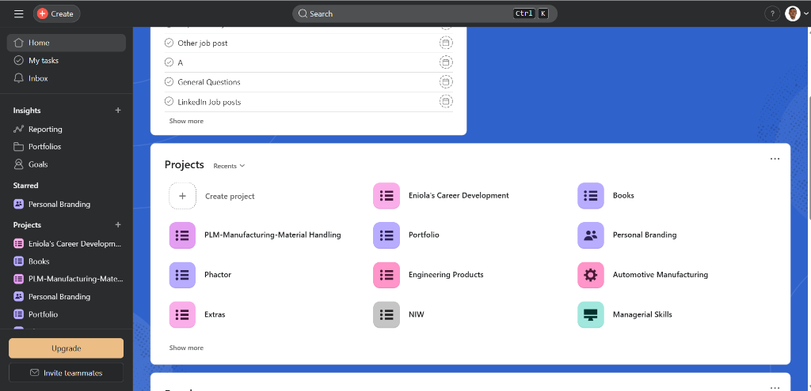
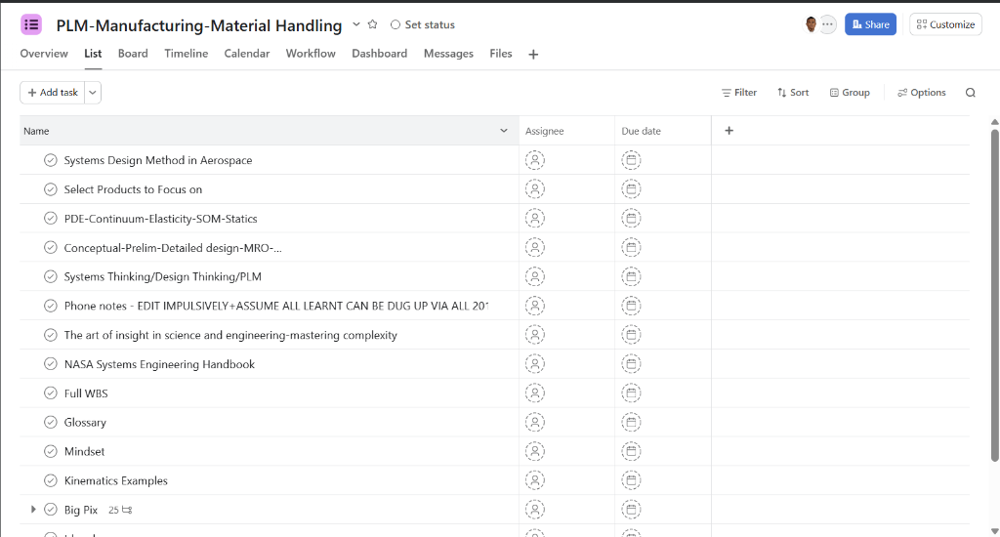
Swipe →
Category 04
Project ManagementEnd-to-end execution and leadership
Orchestrating complex deployments by managing teams, timelines, and stakeholder expectations to ensure successful project delivery.
Focus
Field coordination, agile delivery, and stakeholder management.
Approach
Structured execution with a focus on accountability and trust.
Role
Project Manager & Founder
Goal
90% delivery success rate.
- Agile Delivery
- Team Leadership
- Field Coordination
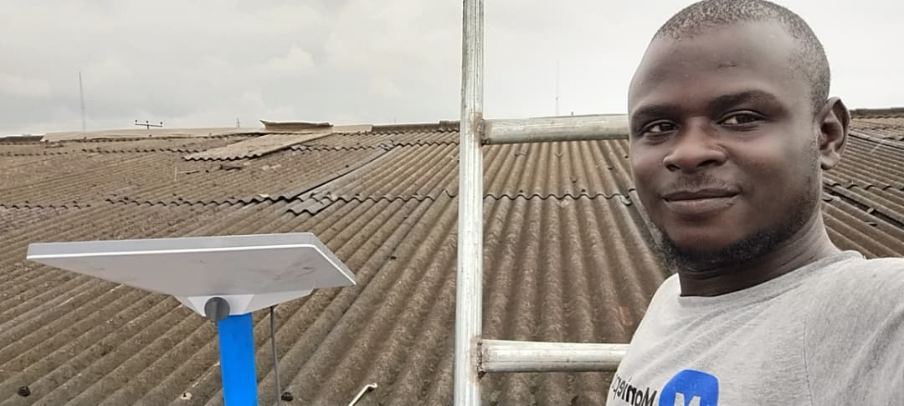
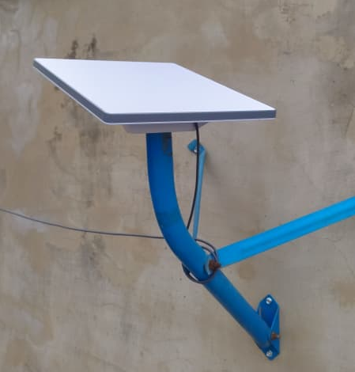
Swipe →
Category 05
Internet ConnectivityReliable network deployment for homes and SMEs
Delivering high-speed, dependable internet infrastructure by combining Starlink technology with custom network optimization and robust mounting solutions.
Focus
Starlink installations, network distribution, and site optimization.
Approach
End-to-end service from site survey and mounting to network configuration and handover.
Role
Field Coordinator & Network Installer
Goal
Uninterrupted, high-speed access.
- Starlink
- Network Optimization
- Infrastructure
Operational Strength
Not just technical skills — delivery habits that make projects succeed.
Business Development
Built customer growth strategies, partnerships, and account success rhythms at Moniepoint — driving measurable portfolio performance.
Project Coordination
Worked across technicians, external professionals, and stakeholders to keep complex technical rollouts on schedule and on budget.
Research Discipline
Supported structured data workflows, documentation quality, and standards-based submissions — bridging academic rigor with field delivery.
Engineering Foundation
Applied design, fabrication, simulation, and embedded systems thinking across machinery, automation, and IoT product projects.
Experience
A founder who moves across engineering, operations, and commercial execution.
Delivering connectivity infrastructure, solar backup, smart automation, and intelligent security systems across Nigeria — end to end.
Account growth, market-facing strategy, and customer portfolio performance across a high-volume commercial environment.
Supporting data integrity, research coding, and submission quality across structured academic research workflows.
Agricultural equipment design, reliability engineering, and production support — applied mechanical and systems thinking.
Recognition
Proof that the work is grounded in engineering practice.
- Certificate of Achievement — CODET National Students Project Competition
- National Youth Service Corps Completion Certificate
- BEng in Bioprocess Engineering — University of Ilorin
Build Areas
- Connectivity infrastructure and internet optimization
- Solar backup and power continuity planning
- IoT integration, embedded systems, and automation
- Client support, coordination, and project delivery
Contact
Let's build something dependable, useful, and well-executed.
If you need a technical founder, implementation partner, or systems thinker who can move from planning to delivery, I am open to the right conversation.
Phone / WhatsApp
+234 913 709 1665